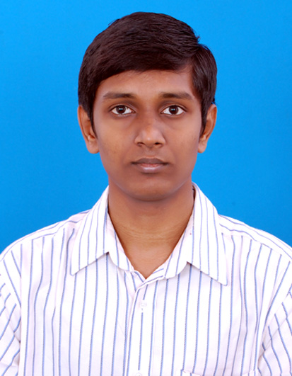

Please describe any relevant past experience
As an undergraduate student in the mechanical engineering department in my Chilean University, I was part of the diffusion team, helping high school students to solve all the doubts regarding the mechanical engineering career, the different specializations we had, and projections in the labor sphere.
What are your goals/vision for your committees of choice? How do you think you can contribute to them?
I believe there is a deficiency in terms of sports for graduate students. Sports can be one of the best ways to meet people, enhancing leadership skills, teamwork, and sports are also good for physical and mental health. My goal is to create a space where every graduate student could practice what they want, make friends and join the community of engineering students.
Any other information you would like to share
I am a young Chilean born in France, my native language is spanish, and I have a near native French.
In Chile I use to play soccer in an amateur team.
Please describe any relevant past experience
During the time at the Technical University of Munich I was helping to organize the trips of the Model United Nations club and plan our training sessions.
What are your goals/vision for your committees of choice? How do you think you can contribute to them?
My primary goal is to meet fellow students. I am an outgoing and friendly person and I would like to help getting in touch with companies or alumni.
Please describe any relevant past experience
I have some similar but varied past experience.
- I was on the planning committee for a Student Youth convention which hosted about 500 students and was involved in some fundraising.
- I was involved in a group which organized different extra-curricular activities (like a programming club, electronics club) prime among which were study weekends around exam time.
- I participated in organizing elections for the Catholic student federation in my university for three years and was mandated to organize elections in department.
- I drew up the plan for the activities undertaken by the student organization in my department and secured the necessary external contacts for our excursion to a technological institute and for a guest talk
- I was involved in organizing a guest talk for my faculty.
What are your goals/vision for your committees of choice? How do you think you can contribute to them?
On the whole, I hope to help EGSC be a better student body by encouraging more interaction between the students.
Course selection can be difficult at times and to help with this, creating a forum where students can get information about a course, a faculty, how to approach them, and about pertinent courses to pursue a certain specialization from other students should be of some benefit.
In the same vein, helping student know the opportunities out there and the skills required to pursue a certain career path would also be of benefit. There are also many activities which could be organized that would help prepare students for the world out there or for a PhD. e.g Courses in Organizational behavior, etiquette etc. I would hope to (with help) organize this to further enrich our Columbia experience.
Lastly I would be willing to work as part of the team to help achieve all the other EGSC goals, to help with the running of the body, and to be a good representative.
Please describe any relevant past experience
Leadership/Extra-curricular:
Vice President- NSBE Students' Engineering Society - 2012/2013 - South Carolina State
University
Programs Chair- NSBE Students'‰Ûª' Engineering Society - 2011/2012 - South Carolina State
University
What are your goals/vision for your committees of choice? How do you think you can contribute to them?
In an era of overlapping curriculum, interdisciplinary outlook has matured enough to create a parallel need for inter-school relations and even more so within and between several graduate schools whether business, law, journalism, or education.
My goal is to use a charismatic approach for the purpose of inter-school or inter-college connections within the SEAS community in particular and between the entire breadth of graduate schools within the university.
I see a potential for growing connections that can help foster healthy networking opportunities geared towards a spirit of entrepreneurial friendship that can grow from within graduate studies all the way to when we become part of the alumni.
Inherently we make friends and connections at or within our comfort circles and this is what I aspire to break by means of social low-key interactive avenues so that there would be a platform that creates an atmosphere of reaching out across the aisle to make meaningful associations within the schools and even between SEAS and Teachers College, Business, Law, Journalism and Medical Schools.
Any other information you would like to share
With two years of leadership role as the programs chair and vice president respectively at the college of engineering of my home institution, I would want to gather such a seasoned experience of working with people and advance it along with my maturity as a graduate student. This is my strategic tool and skill set based on which I would be able to work with a spirit of teamwork while driving personal initiatives and visionary perspectives that would benefit SEAS.
With a realistic view of how situations and priorities evolve, I am flexible enough to accommodate changes that would reflect periodic need for adjustment and renewed vision.
In the long haul I hope to use this platform to energize my aspirations for further leadership opportunities that would benefit SEAS and Columbia University for the opportunity I had to be admitted here in a form of an invitation to join a community of scholars who can come together and merge thoughts and ideas at an unprecedented level.

Pragatheeswaran Meyyappan
Please describe any relevant past experience
I have , in my under graduation, been lucky to work with the Mechanical Engineers' Association and the Indian Society for Technical Education - prestigious clubs of my under graduation institution. I have conceptualized,organised and implemented events where the participant turnout was over 500.
What are your goals/vision for your committees of choice? How do you think you can contribute to them?
For the Career Development committee and Alumni Affairs Committee, I envision that they both blend together to serve as a platform for exchange of ideas between the recent graduates (Alumni) of the School and the current students. This shall help the students to learn more about the job market, additional skills sought after, if any. For the alumni too, this shall serve as a good networking platform.
To this end, I intend to hold numerous meetings, not necessarily within the campus, so that a good rapport is developed.
Any other information you would like to share
I bring with me, an experience in organizing student-events during my under graduation which would help me conduct the events smoothly, ensuring benefits for all the participants involved. I have had numerous instances of success and failure in the past to know what works and what doesn't.
Please describe any relevant past experience
I was the Cultural Secretary of my undergraduate college.(2012-2013)Thus my college representative.
Have managed a lot of activities throughout that year as well as organized the inter college cultural festival heading a committee of 40 people ( managing events , budget ,marketing and various other teams )
Co ordinated with the Alumini too .Have been on the college teams for dance , throwball and debates and have been a part of the organizing committee for various technical events as well.
I have also been a juinior representative for the IEEE committee.
What are your goals/vision for your committees of choice? How do you think you can contribute to them?
With my experience as mentioned above coupled with good communication and social skills I feel I can efficiently contribute to the committee. I shall try to be as resourceful and fulfill my responsibilities to the T .
Please describe any relevant past experience
During my undergraduation, I was a part of cultural and thechnical fest organizing committee of my college. And have worked as a volunteer and I was also a committee head in some of the events.
What are your goals/vision for your committees of choice? How do you think you can contribute to them?
The only goal for me is to get more outcome and great results with an optimum use of resources. The only way to acieve this goal is an effecient and advance planning.
Please describe any relevant past experience
2012-2013 -
Served as the instructor for peer students in the psychological counseling room
Position: Psychological Counselor
Served as the assistant for the president in Modeling Association on Electrical and Information Engineering
Position: President Assistant
2011-2012 -
Supported education for Gepai County in Lantian City
Position: Team member
Worked as a volunteer teacher for the students in the poor rural district; persuaded the parents into further supporting their children's education; promoted the importance of higher education
Founded the Pengkang Weekly Newspaper in Xian Jiaotong University
Position: Founder and Chief Editor
What are your goals/vision for your committees of choice? How do you think you can contribute to them?
I'm interested in the career development of Columbia students, which helps me understand the current situation of searching a job. In order to get complete development of both the department and myself, I'll be active in organizing relevant events and communicating through different departments.
Any other information you would like to share
I'm also interested in various activities. I love reading, swimming, hiking.I'm good at playing the piano, as well as Chinese Calligraphy (familiar with four different types of traditional Chinese calligraphy)
Please describe any relevant past experience
Accumulated some experience in social communication and activities planning by participating in the planning of affairs such as New Year Party and The Graduation Party of Shanghai Jiao Tong University(SJTU). Also, the basketball team leader and research project team leader experience contributed to my leadership. Besides, the process to win the top ten singer and consecutive championships of SJTU Basketball Union Cup trained my mental quality.
What are your goals/vision for your committees of choice? How do you think you can contribute to them?
EGSC will organize a lot of activities like Alumni Panel or Meet Current students and I attended some of them. By the experience from my participation in past activities, I want to utilize my strength in social communication and event planning to contribute to EGSC. Also, my experience in recreational activities will make me do my best in celebration or events required digital media.
Any other information you would like to share
Volunteer of the 100th Anniversary of School of Mechanical Engineering in SJTU
Volunteer of Shanghai 2013 International Automobile Exhibition, Shanghai, China
Participated in The Challenge Cup of Entrepreneurship Competition, Shanghai, China
Volunteer of Shanghai 2011 Jazz Music Festival, Shanghai, China
Volunteer of China international industry fair 2010, Shanghai, China
Please describe any relevant past experience
Training Assistant of MAN Truck & Bus Trading (China) Co., Ltd
Complete a Dealer Assessment System. Manage training appointments with 15 companies. Assist 3 technical training engineers in 8 courses. Communicate with 20 service engineers.
Secretary of the 1st Party Branch of Energy and Thermal Engineering major.
Arrange several activities for the about 15 members.
Class league secretary
Organize 6 excursions for 25 classmates.
What are your goals/vision for your committees of choice? How do you think you can contribute to them?
I think the committees are more focused on communicating with others including the students and alumni. I have the experience of working with a lot of people.